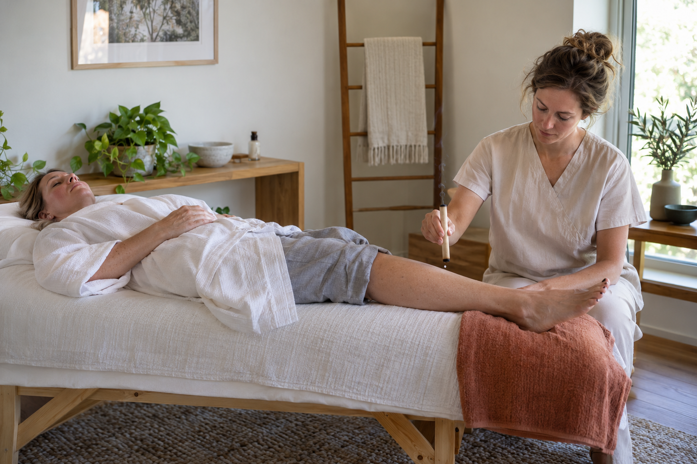
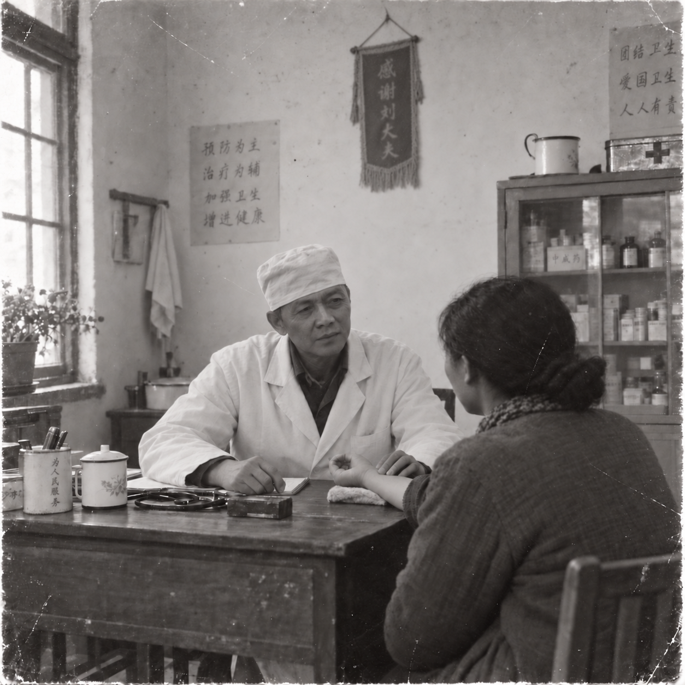

01 / NOTICE EARLY
See the pattern sooner
Sleep, food, movement, mood, and daily rhythm can be useful things to notice before a small concern becomes a bigger question.
Most wellness advice asks you to change everything. Huloloo starts with one small practice, the TCM habit of noticing earlier, and a clearer way to pay attention to what changes.
Huloloo translates a family-rooted TCM perspective into visual, practical education. Viewers can understand the idea, try a gentle step, and notice their own experience.
Sleep, food, movement, mood, and daily rhythm can be useful things to notice before a small concern becomes a bigger question.
Short routines, seasonal ideas, and gentle care that can fit inside an ordinary day rather than requiring a new identity.

Understand the tradition, the setting, and the questions to ask before exploring a hands-on practice with qualified care.
We value meaningful personal experience while staying honest about uncertainty, individual differences, and when to seek qualified care.
Traditional Chinese Medicine calls this early-care idea 治未病: notice patterns while they are still asking for attention, then make supportive choices before a problem grows louder.
Huloloo is built for people who want more than a trend and less than a lecture.
Our promise is a repeatable way of paying attention: respect the tradition, explain the limits, show the small practice, and let the viewer notice what feels useful.
治未病 turns early attention into a daily habit rather than an emergency response.
We make room for reported experience without turning one person’s result into a guarantee.
Dr. Lau’s work gives the channel a real lineage; every lesson is made understandable for a North American audience.
Traditional use, research, uncertainty, and professional care stay visible in the same conversation.
Dr. Lau was the founder’s grandfather: an experienced TCM physician who gave his time, skill, and care to the people around him.
Our family remembers that he could have stayed in the city with a more comfortable life and sufficient payment. Instead, he returned to his hometown to serve local families. He used acupuncture, tuina massage, food guidance, sleep, movement, and emotional care—and contributed to the relief effort after the Tangshan earthquake.
His spirit inspired Huloloo. We want people everywhere to have another thoughtful way to care for their health: a way that begins earlier, stays practical, and respects the person’s own experience.

A small selection of encouraging moments shared by people exploring Huloloo-inspired routines.
Bring one small practice into your week.
Short videos, visual notes, and family-rooted TCM education for the platforms you already use.
Get one thoughtful note when something new goes live.
Occasional Huloloo updates. Unsubscribe anytime.